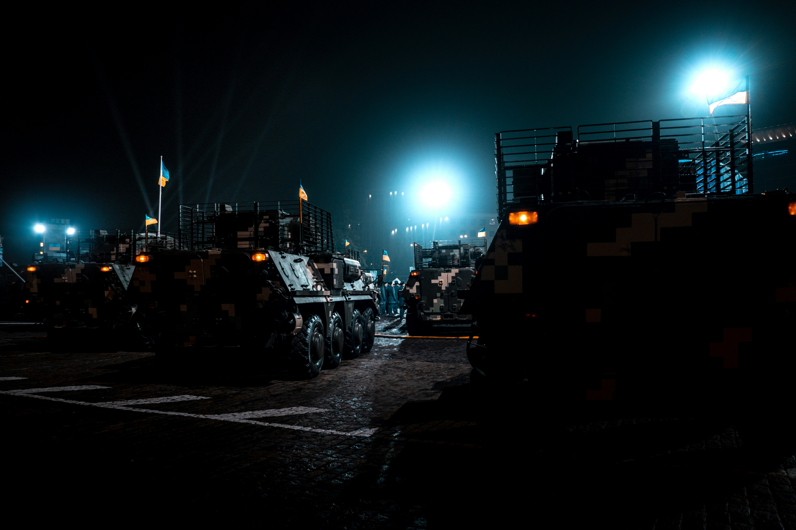
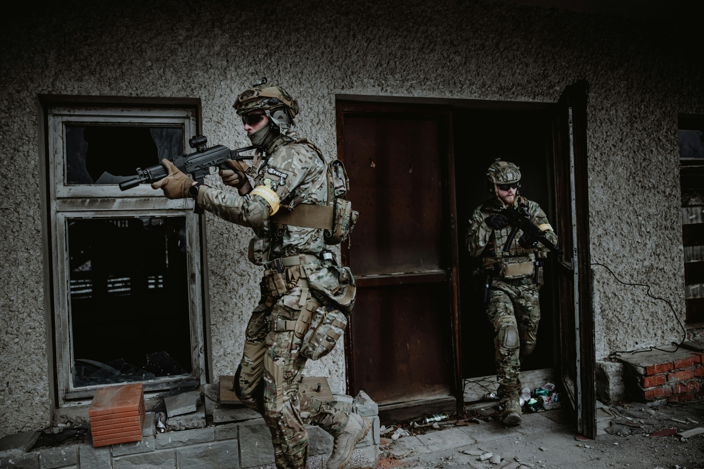
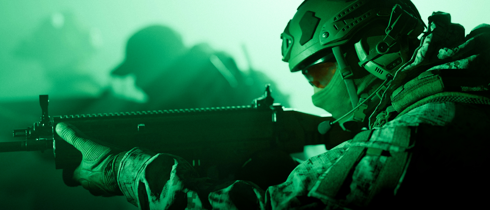
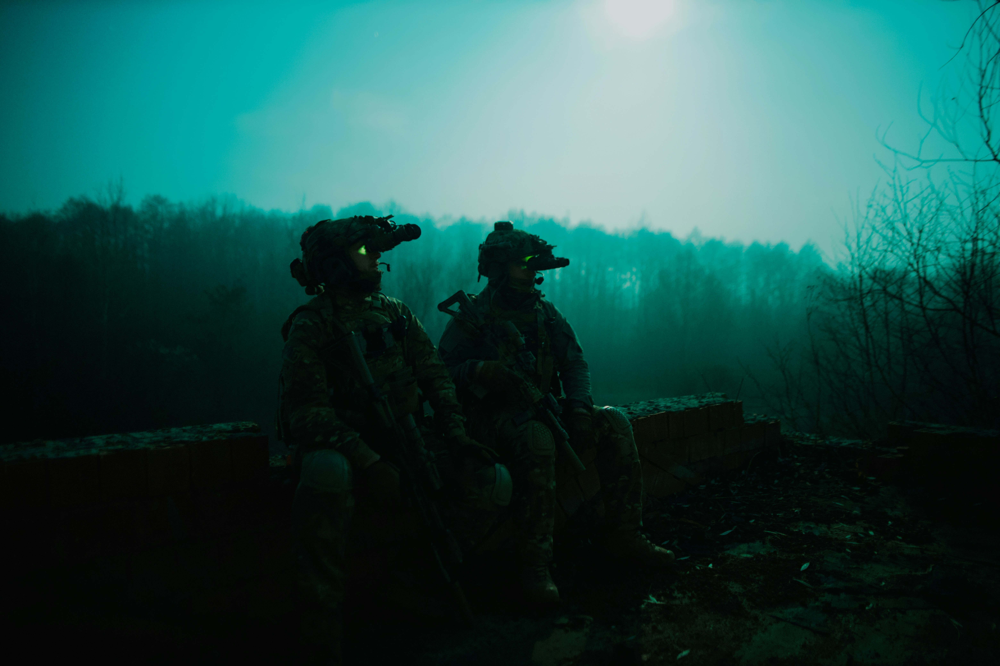

Four New Maps Of Death and Destruction
That's right four new maps never seen before to Call of Duty. Below you will get a quick run down of what the map entails and what you have in store for you as you try and survive against fellow gamers in new destructive maps like never before. So, are you ready to see if you can survive in our all out war and there is nowhere to hide, or is it....
Siege

Siege, are you ready to dive into a new map that takes you beyond enimies line in their enforced base guarded by four different levels of guards to fight. That is not the only thing to fight, you have your fellow players out to get you no matter what, So, who will be the first ones to be captured. Not me, Never Surrender!
Citys Down

Citys Down, but are you down is the question because this map will definitely put your skills to the test with this run down town that you have to try and manuever through while protecting yourself and team mates against your fellow gamers. But, a little twist with this map and that is the only weapons you can have are your knifes and pistols, so get ready for some backstabbing and run as fast as you can.
Going Dark

Going Dark, wait I can't see or can I. You get to play with your new gadgets on this map so enjoy your all new night vision goggles, military grade ofcourse. It is set in a modern city in the country of Germany, Berlin which is sure to be a lot of new adventures to pack your bags and gear up.
Mornings Rise

Mornings Rise, nothing like a warm cup of coffee and a warm gun to keep you company in this all new map that takes place in a small little country town where the populationg is probably the same size as an Italian family. Theres nowhere to run and no cover so bring your gun game cause your going to need it.